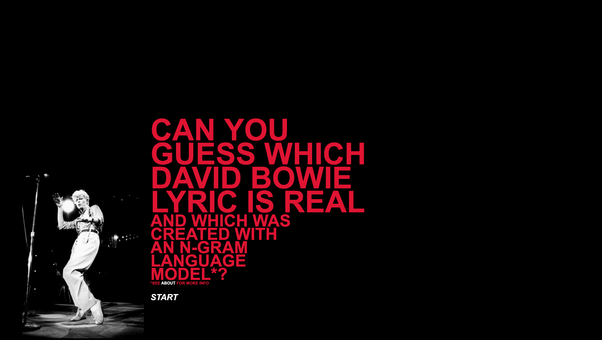
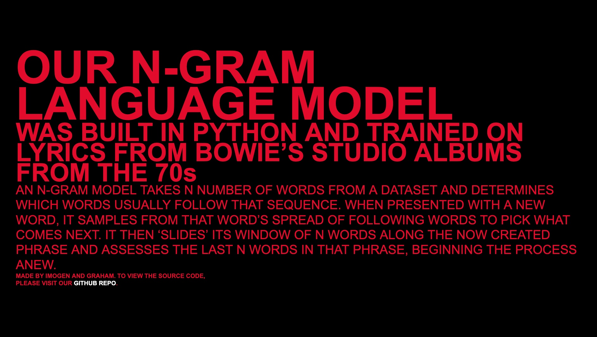

David Bowie Lyric Game
A small game I developed with my brother; the goal is to try to differentiate the real Bowie lyrics from those generated with our n-gram language model. You can play the game here.

The landing page for the game; the styling was inspired by the art direction for Bowie's Live Nassau Coliseum '76 album.
The "gameplay."

A brief description of the mechanics behind the game.